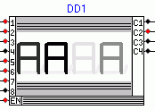
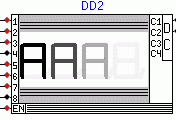
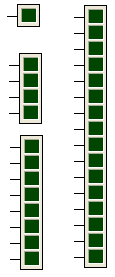
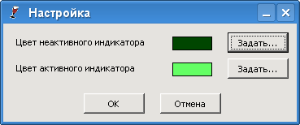

Этот компонент отображает цифру, код которой (четырехрязрядный) подан на вход. Старший разряд находится внизу.
Отображает «1», если на входе высокий уровень, «0» - если низкий.
Они позволяют подсвечивать один или несколько индикаторов в зависимости от состояния входов. Все реализованные в плагине многосегментные индикаторы (кроме Индикатора 1..F) имеют вход разрешения работы EN и несколько входов, соответствующих сегментам. Некоторые многоразрядные индикаторы имеют также входы выбора текущего индикатора (разряда), причем в зависимости от типа элемента выбор может осуществляться как непосредственно (т.е. каждый вход соответствует своему разряду), так и посредством встроенного дешифратора (в этом случае на вход должен подаваться номер индикатора).
Соответствие входов управления сегментами и управляемых сегментов приведено в таблице:
| Номер входа | Позиция сегмента |
| 1 | Верхний |
| 2 | Верхний правый |
| 3 | Нижний правый |
| 4 | Нижний |
| 5 | Нижний левый |
| 6 | Верхний левый |
| 7 | Центральный |
| 8 | Запятая |
| 9 | Верхний наклонный "/" |
| 10 | Верхний наклонный "\" |
| 11 | Нижний наклонный "/" |
| 12 | Нижний наклонный "\" |
Для всех таких индикаторов есть возможность настраивать следующие параметры:
Этот индикатор позволяет отображать один символ, составленный из 12 различных сегментов. Вход EN позволяет разрешать (H или запрещать L вывод).
Позволяет выводить значение байта данных в шестнадцатеричном виде, соответствующее состоянию входов этого элемента. Младший полубайт снимается с правых входов (младший бит сверху), старший - с левых.
В отличие от предыдущего, этот индикатор имеет больше входов и позволяет показывать двухбайтовое слово (в шестнадцатеричном виде).
Старший байт снимается с левых входов (младший бит сверху).
Их внеший вид показан на рисунках:
 Эти элементы позволяют управлять отдельными индикаторами для каждого разряда. Они доступны в двух вариантах: со встроенным дешифратором или без него. Вход разрешения работы EN также присутствует.
Входы C1-C4/C8 (или соответствующие входы для версий элементов со встроенными дешифраторами) задают, какие из индикаторов в данный момент подключены к входам данных 1-8. При этом все изменения на входах данных отображаются на выбранных индикаторах. Для элементов с дешифраторами одновременно может быть выбран только один элемент, а в остальных - несколько. После того, как выбор с индикатора снят, он будет включен указанное время (время послесвечения), после чего погаснет. Поэтому для стабильного отображения данных на таких индикаторах их нужно постоянно обновлять (сканировать), например, с помощью контроллера К580ВВ79.
Эти индикаторы позволяют выводить более сложные символы за счет дополнительных сегментов.

Предназначены для отображения уровня сигнала на входе/выходе элемента. Высокий уровень сигнала отображается зеленым свечением.
Имеется четыре различных исполнения данного элемента: одиночный и блоки по 4, 8 и 16.
Есть возможность настройки цвета индикатора на его странице свойств:
